Un concepto clave en los modelos de series de tiempo es el conocido como procesos estocásticos. Un proceso estocástico es una secuencia de números aleatorios. El proceso estocásticos se escribirá como \(y_i\)\(\forall\)\(i=1,2,...T\) Si este índice representa el tiempo el proceso estocástico se llamará serie de tiempo. Si se asigna un posible valor de \(y\) por cada \(i\) se estará construyendo una posible realización del proceso estocástico.
# carga de datos del libro de Wooldridgedata("phillips", package ="wooldridge")str(phillips)
'data.frame': 56 obs. of 7 variables:
$ year : int 1948 1949 1950 1951 1952 1953 1954 1955 1956 1957 ...
$ unem : num 3.8 5.9 5.3 3.3 3 ...
$ inf : num 8.1 -1.2 1.3 7.9 1.9 ...
$ inf_1 : num NA 8.1 -1.2 1.3 7.9 ...
$ unem_1: num NA 3.8 5.9 5.3 3.3 ...
$ cinf : num NA -9.3 2.5 6.6 -6 ...
$ cunem : num NA 2.1 -0.6 -2 -0.3 ...
- attr(*, "time.stamp")= chr "25 Jun 2011 23:03"
unem.ts <-ts(phillips[,2], start =1948, frequency =1)class(unem.ts)
[1] "ts"
mean(unem.ts)
[1] 5.633929
plot.ts(unem.ts)
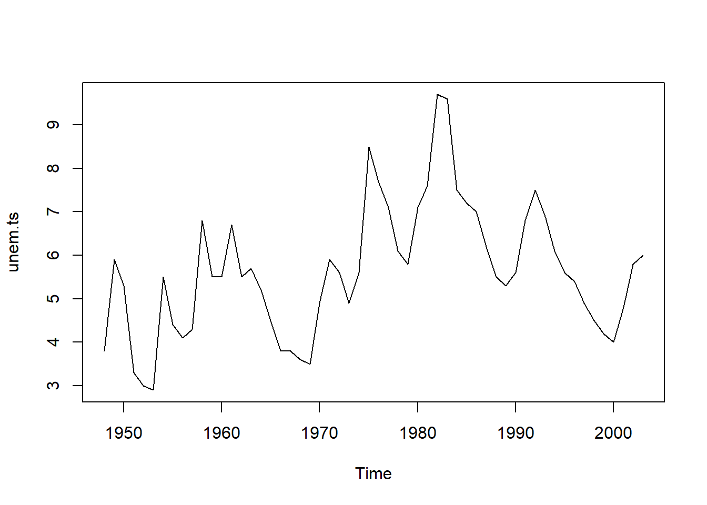
data("barium", package ="wooldridge")chnimp.ts <-ts(barium[,1], start =c(1978, 02), frequency =12)plot.ts(chnimp.ts, main ="volumen de importaciones de cloruro de bario de China",ylab ="Volumen de cloruro de bario",xlab ="tiempo")
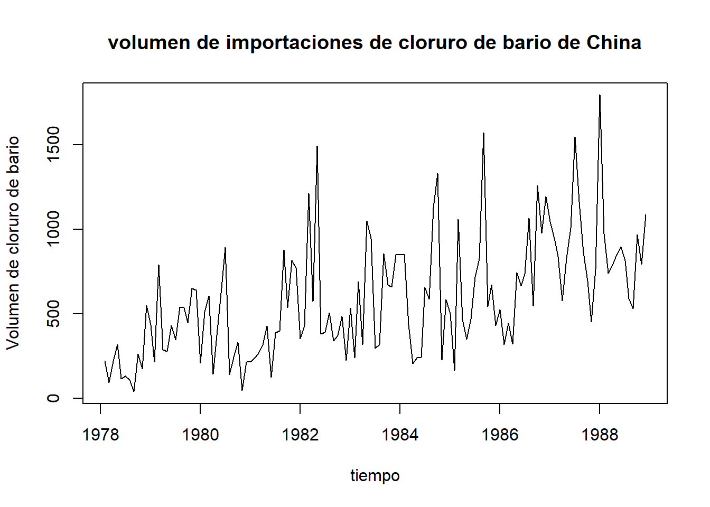
plot(decompose(chnimp.ts))
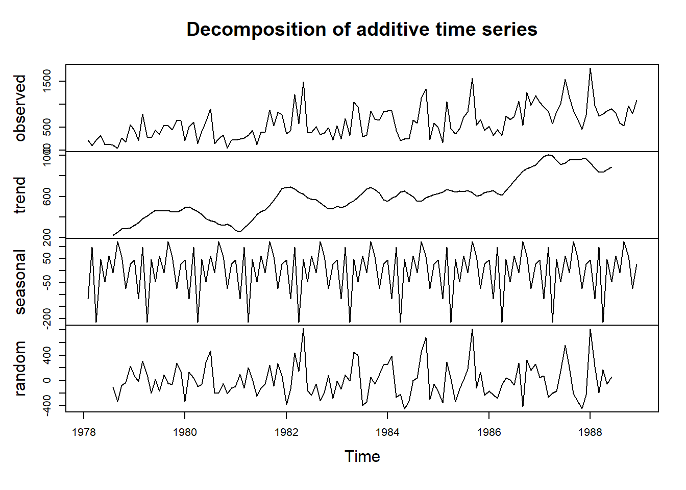
# Carga de datos del libro de Cowpertwait & Meltcalfewww <-"https://raw.githubusercontent.com/dallascard/Introductory_Time_Series_with_R_datasets/master/Maine.dat"Maine.moth <-read.table(www, header = T)Maine.moth.ts <-ts(Maine.moth$unemploy, start =c(1996,1),frequency =12)plot.ts(Maine.moth.ts)
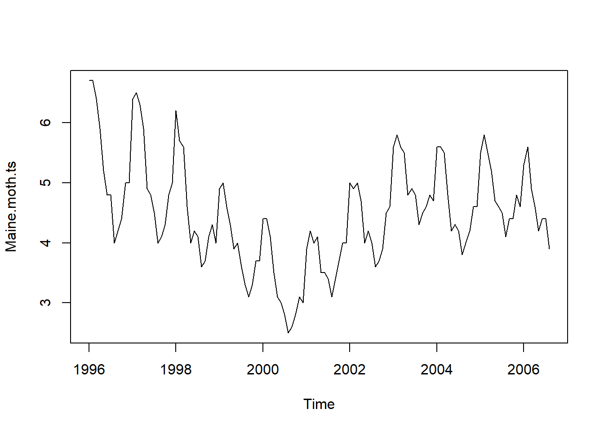
A continuación podemos obtener información del Banco Mundial
# libreriaspacman::p_load(WDI, tidyverse)paises <-c("BOL", "BRA", "CHL", "COL", "ECU", "PER", "PRY", "URY")variables <-c("FP.CPI.TOTL.ZG", # Inflación (índice de precios al consumidor)"SL.UEM.TOTL.ZS", # Tasa de desempleo"NE.IMP.GNFS.ZS", # Importaciones (% del PIB)"NE.EXP.GNFS.ZS", # Exportaciones (% del PIB)"NY.GDP.MKTP.CD") # PIB (en USD corrientes)desEc <-WDI(country = paises, indicator = variables, start =1990, end =2023)desEc <- desEc[,3:9]names(desEc) <-c("pais", "año", "inflacion", "desempleo", "impor", "expor", "PIB")desempleo <- desEc %>%filter(pais=="ECU") %>%select(desempleo)desempleo <-ts(desempleo, start =1990, frequency =1)plot(desempleo)
La realidad no se muestra de distintas maneras: solo existe una realización de la realidad. Esto implica un limitación que se debe solucionar. Esto nos lleva a analizar el concepto de estacionariedad, que significa que todas las observaciones de la serie de tiempo provienen de la misma distribución de probabiliadad y que, a su vez el proceso no es muy persistente, cada observación contendrá información valorable que no está presente en ninguna de las otras observaciones, por lo que los estadísticos obtenidos de las observaciones serán consistentes con sus respectivos parámetros poblacionales. Por ejemplo, la media de estas observaciones en el tiempo será consistente con la media poblacional.
El concepto de estacionariedad tiene dos formas, la estricta y la débil
2.1.1 Estacionariedad estricta
Un proceso estocástico \({y_i, i=1,2,...,T}\) es estrictamente estacionario si, para un número real finito \(r\) y para cualquier conjuntos de subíndices \(i_1, i_2,...i_T\):
Es decir, que la distribución conjunta de \({y_i}\) con \(i=1,2,...,T\), depende solo de la distancia \(r\) y no de \(i\). Por ejemplo, la probabilidad conjunta de \((y_1,y_{11})=(y_{51},y_{61})\), en este caso \(r=10\). Lo importante para distribución es la posición relativa de la secuencia. Además, esto quiere decir que la probabilidad que \(y\) caiga en algún intervalo en particular es siempre la misma. Si un proceso estocástico es estrictamente estacionario: la media, la varianza y demás momentos de las distribución serán los mismos para todo \(i\). Un ejemplo de series estrictamente estacionarias son los procesos independientes e identicamente distribuidos (\(i.i.d.\))
Usando la base de datos Maine.moth.ts() se determina que no es estrictamente estacionaria, porque sus cuatro momentos no son los mismos en distintos intervalos de tiempo.
Los procesos son no estacionarios simplemente porque tienen tendencia deterministica. Es decir, que si se remueve la tendencia, la serie de tiempo se convertirá en una serie estacionaria. A estas series se les conoce como series estacionarias con tendencia. Asimismo, si se tiene un serie de tiempo que no es estacionaria pero que su diferencia sí lo es, se conoce como serie estacionaria en diferencias
plot(aggregate(AirPassengers))
plot(aggregate(Maine.moth.ts))
2.1.2 Estacionariedad débil
Un proceso estocástico {\(y_i\)} con \(i=1,2,...,T\) es debilmente estacionario si se cumple los siguiente:
Rendi_BTC <-dailyReturn(BTC) # retornos diarios de la serie# Gráfico de la seriechartSeries(Rendi_BTC)
R.s.BTC <-weeklyReturn(BTC)# Gráfico de los redimientos semanales de VZplot(R.s.BTC, main="Serie estacionaria")
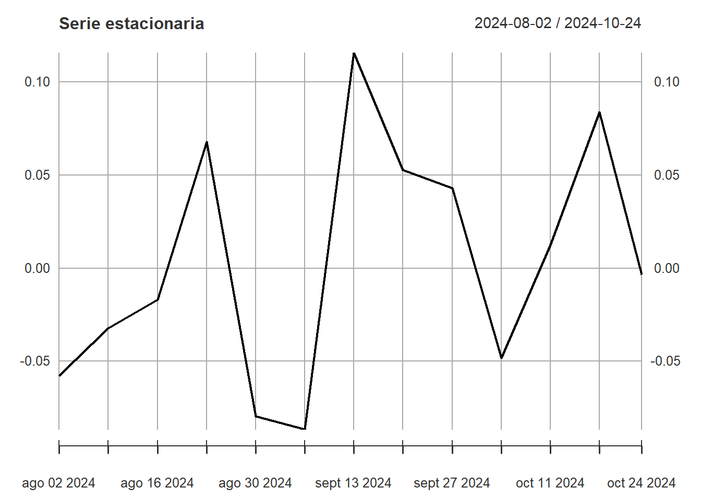
# La media de los rendimientosmean(Rendi_BTC)
[1] 0.001086456
# Graficando de manera conjuntaplot(BTC$BTC.Close)
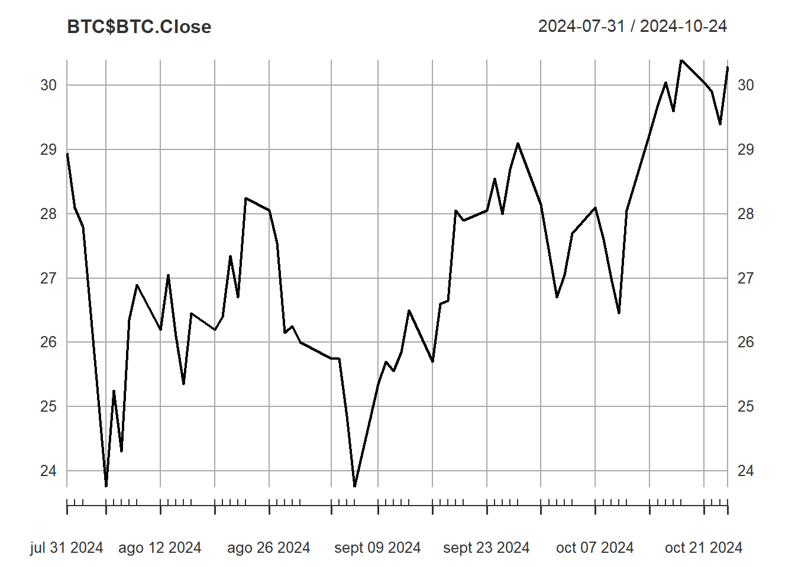
chartSeries(Rendi_BTC)
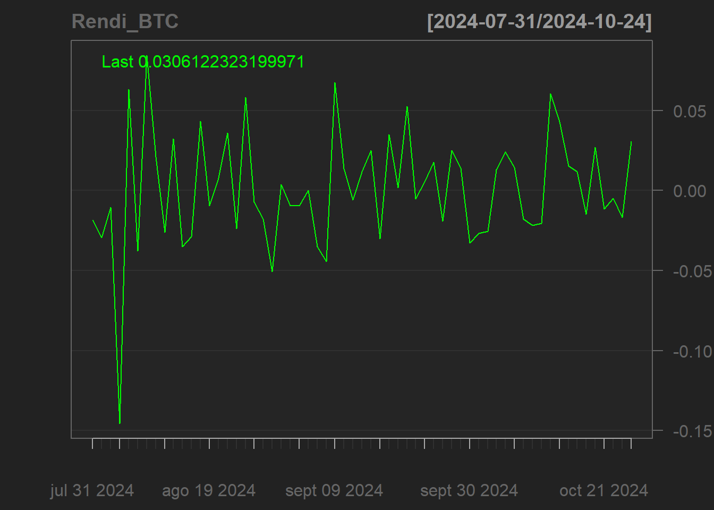
Como su nombre lo indica existe un gráfico no estacionario (primero) y el estacionario (segundo).Una forma de mirar que la primera serie es no estacionaria es tomando un intervalo de un tamaño fijo en dos puntos distantes y calcular el promedio.
Lo que se puede observar que en los los tres intervalos, existen tres valores distintos de la media. Lo que me genera indicios de no estacionariedad de la serie
3 La autocovarianza, la autocorrelación y el correlograma
Se supone que el subíndice \(i\) representa al tiempo, por lo tanto, el proceso estocástico \({y_i}, i=1,2,...T\) será un serie de tiempo. La autocovarianza se exprese como \(\gamma_j\) y se define así:
Como se puede advertir en la ecuación [4], la autocovarianza solo depende de \(j\) (posición relativa). La varianza de la serie de tiempo \({y_i}\) será igual:
\[cov(y_i, y_i)=var(y_i)=\gamma_{i-i}=\gamma_0 [5]\] Por lo tanto, la autocorrelación de orden \(j(\rho_j)\) se define como el ratio entre la autocovarianza de orden \(j\) y la varianza:
Con \(j=1,2,...T\) Si \(j=0; \rho_j=1\). Si graficamos la evolución en el tiempo de \(\rho_j\), construiremos el correlograma
3.1 El proceso de ruido blanco
El proceso de ruido blanco (White noise process), es un proceso débilmente estacionario con media constante y no autocorrelación. Es decir, el proceso de ruido blanco debe cumplir:
C0menzamos recordando la definición matemática de la autocorrelación muestral
\[\hat{\gamma}_j=\frac{1}{n-j}\times \sum_{t=j+1}^n(y_t-\bar{y})\times(y_{t-j}-\bar{y}) [10]\] Se divide al inicio de la ecuación por \(n-j\) y no por \(n\), para obtener un estadístico insesgado. Esto es importante cuando el tamaño de la muestra es pequeño; pues si la muestra es grande (\(n\rightarrow \infty\)), \(n-j\) se aproxima a \(n\). Ahora, la media de la serie se calcula de la siguiente forma:
\[\bar{y}=n^{-1}\times\sum_{t=1}^ny_t[11]\] Siguiendo a nivel muestral, definimos la autocorrelación muestral como:
\[\hat{\rho}_j=\frac{\hat{\gamma}_j}{\hat{\gamma}_0} [12]\] Una vez, definidas las anteriores ecuaciones se presenta los test’s empleados para determinar la presencia de autocorrelación. El primer método se basa en la siguiente propiedad asintótica:
Donde: \(\hat{\rho}=(\hat{\rho}_1,\hat{\rho}_2, \hat{\rho}_3,....,\hat{\rho}_m)\). Esta ecuación establece que las autocorrelaciones de \(\rho\) asintóticamente se distribuyen como una normal estándar. Por lo tanto, se pueden construir intervalos de confianza para la autocorrelación poblacional, así:.
si el nivel de confianza deseado es 90% (\(\alpha=0.10\)), el valor de \(z_{\alpha/2}=1.645\). Entonces tenemos el intervalo de confianza para las autocorrelaciones poblacionales
# Con alpha/2, alpha=0.10, alpha/2=0.95qnorm(p=0.95, lower.tail = T)
LI <-qnorm(p=(1-(0.01/2)), lower.tail = F)*1/sqrt(50)LS <-qnorm(p=(1-(0.01/2)), lower.tail = T)*1/sqrt(50)print(cbind(LI, LS))
LI LS
[1,] -0.3642773 0.3642773
Imagine que tiene el siguiente conjunto de \(\widehat{\rho}=(0.01, -0.3, -0.12)\)
3.3 Pruebas de autocorrelación: los métodos de Box-Pierce y Ljung-Box
Existen dos métodos que permiten determinar la existencia de autocorrelaciones hasta un orden determinado (\(m\)), estas pruebas se les conoce como el método de \(Box-Pierce\) y método de \(Ljung-Box\), estas permiten testear la siguiente hipótesis nula:
\[H_0:\rho_1=\rho_2=\rho_3=...=\rho_m=0[16]\] * El test de \(Box-Pierce\) se calcula mediante:
Las dos pruebas se distribuyen como una chi-cuadrado (\(\chi^2\)), ya que \(\sqrt{n}\times\hat{\rho}\) es asintóticamente independiente y distribuido como una normal estándar. Por lo tanto, la suma al cuadrado de estos números es asitóticamente chi-cuadrado. Los grados de libertad de esta distribución son iguales a \(m\), que representa el número de rezagos deseados.
El método de Ljung-Box es preferido cuando el tamaño de la muestra es pequeño. Como se puede observar a medida que el número de observaciones se incrementa \(n\), la diferencia entre los métodos desaparece.
El problema con ambas pruebas es que no existe una metodología clara para seleccionar el número de rezagos (\(m\)). Si se escoge un \(m\) muy pequeño, se corre el riesgo que no estén capturando autocorrelaciones de orden superior. Por otro lado, si el número \(m\) es demasiado grande las propiedades asintóticas del test se pueden perder y las distribución ya no será una \(X^2\)
3.3.1 Ejemplo
En esta parte se presenta un ejemplo ficticio que permite entender cómo es que estos test son utilizados en la práctica. Se parte del hecho que se han calculado las tres primeras autocorrelaciones de los retornos de algún instrumento financiero. Se supone que el número de observaciones es igual a 50 y que el nivel de confianza deseado es igual al 90%. Finalmente, se asume que las autocorrelaciones obtenidas son las siguientes:\(\hat{\rho}_1=1.25;\hat{\rho}_2=0.22; \hat{\rho}_3=0.02\)
Primero, se estima el intervalo de confianza para las tres autocorrelaciones:
LI <-qnorm(p=(1-(0.10/2)), lower.tail = F)*1/sqrt(50)LS <-qnorm(p=(1-(0.10/2)), lower.tail = T)*1/sqrt(50)print(cbind(LI, LS))
LI LS
[1,] -0.2326174 0.2326174
Con base en este intervalo de confianza, solo la primera autocorrelación no está en el intervalo. Por lo que este será un indicio de la presencia de autocorrelación de primer orden.
Ahora calculemos los test de Box-Pierce y Ljung-Box
\[
=(\frac{50+2}{50-1})\times(\sqrt{50}\times1.25)^2+(\frac{50+2}{50-2})\times(\sqrt{50}\times0.22)^2+(\frac{50+2}{50-3})\times(\sqrt{50}\times0.02)^2
\]\[
82.91+2.61+0.0221=
85.55
\] La hipótesis nula que se va a probar es:
\[
H_0:\rho_1=\rho_2=\rho_3=0
\]
Valores de siginificancia (recuerde que los grados de libertad \(m=3\)):
\(\alpha=0.10\) una prueba no direccional o de dos colas \(7.81\)
qchisq(p =0.10/2, df =3, lower.tail =FALSE)
[1] 7.814728
\(\alpha=0.05\) una prueba no direccional o de dos colas \(9.3484\)
qchisq(p =0.05/2, df =3, lower.tail =FALSE)
[1] 9.348404
\(\alpha=0.01\) una prueba no direccional o de dos colas \(12.8381\)
qchisq(p =0.01/2, df =3, lower.tail =FALSE)
[1] 12.83816
Regla de decisión: Si el valor del test (Box-Pierce o Ljung-Box) \(>\) valores críticos (\(\frac{\alpha}{2}=0.05;0.025;0.005\rightarrow H_0\)) se rechaza
Por lo tanto, como los valores de las prubeas son \(80.57;85.55\), para Box-Pierce y Ljung-Box, respectivamente; se rechaza la \(H_0\). Lo que significa la existencia de autocorrelación significativa de hasta el tercer rezago u orden.
3.4 Ejemplos con R y bases de datos sobre las pruebas de autocorrelación
Para esta prueba suponemos la siguiente hipótesis
\[H_0: \rho_1=0\]
#Probando la autocorrelación para la serie VZ&VZ.OpenBox.test(VZ$VZ.Open, type ="B", lag =5)
Dado que el pvalor en ambos test es mayor que los valores \(\alpha=(0.1, 0.05, 0.001)\) la \(H_0\) no se rechaza. Entonces, los redimientos semanales no presentan autocorrelación de quinto orden.
3.5 Modelos de medias móviles
El proceso de medias móviles o por sus siglas en ingles moving averages (MA) es un modelo que supone que la variable puede ser explicada por un cierto número de rezagos (\(q\)) de los errores, de la siguiente manera:
\[
y_t=\alpha+e_t+\theta_1\times e_{t-1}+\theta_2\times e_{t-2}+...+\theta_q\times e_{t-q} \tag 1
\] Donde: los errores (\(u\)) son i.i.d. con media cero y varianza \(\sigma^2\), en otras palabras \(u\sim N(0,\sigma^2)\).
Usando el símbolo de sumatoria para reducir la ecuación (1), tenemos:
En la ecuación (6) se requiere que todas las raíces características caigan fuera del círculo unitario, es decir que cada raíz de \(r\) en la siguiente ecuación característica sea mayor que uno en valor absoluto.
Esta condición, se conoce como la la condición de invertibilidad. Esta condición asegura que el modelo \(MA(q)\), representado como un modelo AR(\(\infty\)) converja cero, es decir, que (\((\Theta(L))^{-1}\rightarrow0\)). Esta condición asegura que el modelo \(MA(q)\) no sea explosivo. Esta condición se parece a la condición de estacionariedad del modelo AR(p); a su vez, la condición de invertibilidad es muy importante cuando trabajamos con modelo ARMA(p,q).
Para trabajar con series temporales es importante determinar la función de autocorrelación, recordemos:
No olvidar que se asume que \(e\) es ruido blanco (\(\mu=0\) y varianza =\(\sigma^2\)). calculamos el valor esperado de (8), para ello tomamos la esperanza matemática en ambas partes, tenemos
Se asume que \(\mu=0\), se desarrolla el valor esperado:
\[var(y_t)=\gamma_0=E[(\mu+u_t+\theta_1\times u_{t-1}+\theta_2\times u_{t-2}+\theta_3\times u_{t-3}-\mu)^2]\]\[=E[(u_t+\theta_1\times u_{t-1}+\theta_2\times u_{t-2}+\theta_3\times u_{t-3})^2]\]\[\gamma_0=E[u_t^2+\theta_1^2\times u_{t-1}^2+\theta_2^2\times u_{t-2}^2+\theta_3^2\times u_{t-3}^2+(2\times\theta_1\times u_t\times u_{t-1}+otros-términos-cruzados)] [13]\] Analizando el primer término cruzado que presenta la ecuación [13]. Para esto recordamos como se define la covarianza:
\[cov(u_t,u_{t-j})=E(u_t\times u_{t-j})-E(u_t)\times E(u_{t-j})=E(u_t\times u_{t-j}) [14]\] Recordar que los errores son ruido blanco, las autocovarianzas de los errores son cero. Entonces si se aplica el operador de la esperanza a cada uno de los terminos cruzados de la [13], serán iguales a cero. Por lo tanto, vemos que sucede con los primeros términos:
\[var(y_t)=\gamma_0=E[u_t^2+\theta_1^2\times u_{t-1}^2+\theta_2^2\times u_{t-2}^2+\theta_3^2\times u_{t-3}^2]\]\[var(y_t)=\gamma_0=E(u_t^2)+\theta_1^2\times E(u_{t-1}^2)+\theta_2^2\times E(u_{t-2}^2)+\theta_3^2\times E(u_{t-3}^2)\]\[var(y_t)=\gamma_0=\sigma^2+\theta_1^2\times\sigma^2+\theta_2^2\times\sigma^2+\theta_3^2\times\sigma^2\]\[var(y_t)=\gamma_0=\sigma^2\times(1+\theta_1^2+\theta_2^2+\theta_3^2)[15]\] Ahora, tenemos que obtener las autocorvarianzas. Partimos recordando que:
\[cov(y_t,y_{t-j})=E(y_t\times y_{t-j})-E(y_t)\times E(y_{t-j})=E(y_t\times y_{t-j}) [16]\] Seguimos suponiendo que \(\mu=0\), es decir, que \(E(y_t)=E(y_{t-1})=0\). Calculamos la autocovarianza de primer orden:
\[cov(y_t,y_{t-1})=E(y_t\times y_{t-1})=E[\theta_1u_{t-1}^2+\theta_1\theta_2u_{t-2}^2+\theta_2\theta_3u_{t-3}^2+términos-cruzados] [18]\] De nuevo, cuando se aplica el operador de la esperanza a los términos cruzados se hacen cero. Entonces, el análisis es sobre los tres primeros términos:
\[cov(y_t,y_{t-1})=\gamma_1=\theta_1E(u_{t-1}^2)+\theta_1\theta_2E(u_{t-2}^2)+\theta_2\theta_3E(u_{t-3}^2)\]\[cov(y_t,y_{t-1})=\gamma_1=\theta_1\sigma^2+\theta_1\theta_2\sigma^2+\theta_2\theta_3\sigma^2\]\[cov(y_t,y_{t-1})=\gamma_1=\sigma^2(\theta_1+\theta_1\theta_2+\theta_2\theta_3) [19]\] Para la autocorvarianza de segundo:
\[cov(y_t,y_{t-2})=E(y_t\times y_{t-2})=E[(u_t+\theta_1u_{t-1}+\theta_2u_{t-2}+\theta_3u_{t-3})(u_{t-2}+\theta_1u_{t-3}+\theta_2u_{t-4}+\theta_3u_{t-5})] [20]\] Operando tenemos: \[cov(y_t,y_{t-2})=E(y_t\times y_{t-2})=\gamma_2=E[\theta_2u_{t-2}^2+\theta_1\theta_3u_{t-3}^2+términos-cruzadas] [21]\] Aplicando el valor esperado tenemos:
\[cov(y_t,y_{t-2})=\gamma_2=\theta_2E(u_{t-2}^2)+\theta_1\theta_3E(u_{t-3}^2)\]\[cov(y_t,y_{t-2})=\gamma_2=\theta_2\sigma^2+\theta_1\theta_3\sigma^2\]\[cov(y_t,y_{t-2})=\gamma_2=\sigma^2(\theta_2+\theta_1\theta_3) [22]\] La autocovarianza de tercer orden:
\[cov(y_t,y_{t-3})=E(y_t\times y_{t-3})=E[(u_t+\theta_1u_{t-1}+\theta_2u_{t-2}+\theta_3u_{t-3})(u_{t-3}+\theta_1u_{t-4}+\theta_2u_{t-5}+\theta_3u_{t-6})][23]\]\[cov(y_t,y_{t-3})=E(y_t\times y_{t-3})=E[\theta_3u_{t-3}^2+términos-cruzados] [24]\] Aplicando las reglas del valor esperado tenemos:
\[cov(y_t,y_{t-3})=\gamma_3=\theta_3E(u_{t-3}^2)\]\[cov(y_t,y_{t-3})=\gamma_3=\theta_3\sigma^2[25]\] Como podemos observar, las autocovarianzas de orden mayor a 3 solo tendrán elementos cruzados, por lo tanto, estas autocovarianzas serán iguales a cero
\[cov(y_t,y_{t-j})=E(y_t\times y_{t-j})=0\forall j>3 [26]\] Para finalizar calculamos las autocorrelaciones
\[\rho_2=\frac{\gamma_2}{\gamma_0}=\frac{\sigma^2(\theta_2+\theta_1\theta_3)}{\sigma^2(1+\theta_1^2+\theta_2^2+\theta_3^2)}=\frac{\theta_2+\theta_1\theta_3}{1+\theta_1^2+\theta_2^2+\theta_3^2} [28]\] * Autocorrelación de tercer orden:
\[\rho_3=\frac{\gamma_3}{\gamma_0}=\frac{\theta_3\sigma^2}{\sigma^2(1+\theta_1^2+\theta_2^2+\theta_3^2)}=\frac{\theta_3}{1+\theta_1^2+\theta_2^2+\theta_3^2} [29]\] Para
\[\rho_j=0\forall j>3\]
3.6.4 Ejemplo
Con los siguiente valores de \(\theta\) graficar el correlograma para un \(MA(3)\)
Los modelos autorregresivos, conocidos como modelos AR (autorregresive), describen el comportamiento temporal de una variable aleatoria con base en sus propios rezagos y a un error \(i.i.d.\) con media cero y varianza \(\sigma^2\). El número de rezagos es conocido como \(p\). La forma general del modelo es:
No hay que olvidar que la condicion fundamental para el uso de estos modelos es que la serie de tiempo {\(y_t\)} tiene que ser estacionaria o, en términos financieros, se debe estar seguro que la serie revierte a su media y que no se trata de un proceso con raíz unitaria o explosiva. Se explica la esta idea a través de un ejemplo secillo.
Tomando el ejemplo 5 del libro de Court y Rengifo partimos:
\[y_t=\mu +\phi_1y_{t-1}+u_t\] Asumimos que \(\mu=0\) y que \(\phi_1=0.5\). Suponemos que en \(t=1\) ocurre un shock igual a \(3\), es decir que \(u_1=3\) en \(t=1\) y cero después de ese periodo. Se supone, además que, \(y_0=2\). Se analiza qué es lo que pasa con \(y_t\) conforme avanza el tiempo.
\[y_1=0+0.5y_0+u_1=0+0.5\times2+3=4\\y_2=0+0.5y_1+u_2=0+0.5\times4+0=2\\y_3=0+0.5y_2+u_3=0+0.5\times2+0=1\\y_4=0+0.5y_3+u_4=0+0.5\times1+0=0.5\\y_5=0+0.5y_4+u_5=0+0.5\times0.5+0=0.25\] Como se puede apreciar, este proceo tiende a la su media \(\mu=0\). Este caso es un proceo estacionario
Matemáticamente se puede determinar que un modelo \(AR(p)\) es estacionario, a partir de lo siguiente:
\[(1-\phi_1L)y_t=\mu+u_t [44]\] La condición de estacionariedad para un proceso \(AR(p)\) exige que las raíces de la ecuación característica de [44] caigan fuera del círculo unitario, es decir, que todas las raíces sean mayores que uno en valor absoluto. Matemáticamente se expresa de la siguiente forma:
\[1-\phi_1z=0 [45]\\\phi_1 z=1\\z^*=\frac{1}{\phi_1} [46]\] Se recuerda que las raíces de una ecuación son los valores de \(z\) que hacen que la ecuación [45] se cumpla. La condición de estacionariedad implica que todas las raíces de la ecuación [45] sean mayores que uno en valor absoluto. Si se observa la ecuación [46], esta condición implica que:
\[|z^*|>1\Leftrightarrow |\phi_1|<1 [47]\]
Se rompe la condición de estacionariedad cuando se incumple la [47]
Ahora se partimos de un \(|\phi_1|=1\)
\[y_1=0+y_0+u_1=0+1\times2+3=5\\y_2=0+y_1+u_2=0+1\times5+0=5\\y_3=0+y_2+u_3=0+1\times5+0=5\\y_4=0+y_3+u_4=0+1\times5+0=5\\y_5=0+y_4+u_5=0+1\times5+0=5\] Se aprecia que en este caso a medida que el tiempo transcurre el valor de \(y_t\) se mantiene constante y nunca volverá al valor medio de cero. Este es el conocido como raíz unitaria. El término raíz unitaria se puede explicar notando que en la ecuación [46] \(|\phi_1|=1\), lo que hace que \(z^*=1\) (raíz unitaria). Esto, además, implica que esta raíz no caiga fuera del círculo unitario, por lo que el proceso autorregresivo será no estacionario. Advertimos que este es un caso especial de procesos autorregresivos no estacionarios.
Veamos un caso mas generalSe asume que \(\phi=2\) y se analiza lo que esto genera en la evolución de \(y\)
El ejemplo que acabamos de observar, es el casgo general \(\phi_1>1\), el proceso es no estacionario o explosivo.
Estos tres casos demuestran de forma sencilla, el papel importante que juega la condición de estacionariedad en el uso de este tipo de modelos de series temporales. Esto nos lleva hacia la generalizacion de la condicion de estacionariedad para un modelo \(AR(p)\)
3.7.1 3.1 Estacionariedad de procesos AR(p)
Un proceso AR(p) será estacionario si todas las raíces de la ecuación característica correspondiente a la ecuación [48], caen fuera del círculo unitario, es decir, si todas las raíces de la siguiente ecuación son mayores que uno en valor absoluto:
\[1-\phi_1Z-\phi_2Z^2-...-\phi_p Z^p=0\]
Ejemplo
¿Es el siguiente proceso AR(2) un proceso estacionario?
\[(z-3.54)(z+0.63)=0\\z_1^*=3.54\\z_2^*=-0.63 [53]\] La primera raíz es mayor que uno en valor valor absoluto \(|z^*_1|>1\), pero \(|Z_2|<1\)por lo tanto el proceso es no estacionario.
Procedemos a determinar la media, la varianza, las autocovarianzas y las autocorrelaciones correpondientes a un proceso \(AR(1)\). Luego, se generalizará los resultados usando el método de Yule-Walker
Partimos de la técnica basada en el teorema de descomposición de Wold. La método consiste en hallar momentos estadísticos que se necesitan para entender la propiedades de los precesos AR(p) consiste en transformar el proceso AR(p) en un MA\((\infty)\). Esta conversión es posible si y solo si el proceso autorregresivo es un proceso estacionario. Para demostrar estos conceptos partimos de un proceso AR(1).
\[y_{t-1}=\mu+\phi_1y_{t-2}+e_{t-1} [56]\] Reemplazamo [56] en [55]
\[E(y_t)=\mu+\phi_1\times E(\mu+\phi_1y_{t-2}+e_{t-1})=(1+\phi_1)\times\mu+\phi_1^2E(y_{t-2}) [57]\] Rezagamos, una vez más, la ecuación [54]
\[y_{t-2}=\mu+\phi_1y_{t-3}+e_{t-2} [58]\] Usando [58] en [57], tenemos:
\[E(y_t)=(1+\phi_1)\times\mu+\phi_1^2E(\mu+\phi_1y_{t-3}+u_{t-2})=\\(1+\phi_1)\times\mu+\phi_1^2[\mu+\phi_1E(y_{t-3})]=\\\mu+\phi_1\mu+\phi_1^2\mu+\phi_1^3E(y_{t-3})=\\\mu(1+\phi_1+\phi_1^2)+\phi_1^3E(y_{t-3})[59]\] Se rezaga hasta obtener el valor inicial de \(y\) (\(y_0\)), en teoría, rezagando hasta el infinito, se obtendrá:
\[E(y_t)=(1+\phi_1+\phi_1^2+\phi_1^3+...)\mu+\phi_1^{\infty}y_0 [60]\] Usando la condición de estacionariedad \(|z^*|>1\Leftrightarrow |\phi_1|<1\). Se puede observar, si el proceso AR(1) es estacionario (\(|\phi_1|<1\)), la segunda parte de la ecuación tiene a cero, por lo tanto desaparecerá. El factor que acompaña a \(\mu\), será una suma geométrica. Por lo tanto, bajo el supuesto de estacionariedad, la ecuación [60] puede ser escrita asi:
\[E(y_t)=\frac{\mu}{1-\phi_1} [61]\] Una vez comprendido este resultado, y suponiendo que el proceso es estacionario, compete demostrar la forma en la que otros momentos son calculados. Comenzamos con la varianza, asumimos que, la media del modelo \(\mu=0\).
Usaremos el teorema de descomposición de Wold, que convierte al proceso autoregresivo en uno de medias móviles. Partimos de un proceso \(AR(1)\)estacionario, expresados de la siguiente forma:
\[(1-\phi_1L)y_t=e_t \\ y_t=\frac{1}{1-\phi_1L}e_t [62]\] no se olvide que la fracción es una progresión geométrica, entonces se puede escribir como:
\[\gamma_0=E[(e_t^2+\phi_1^2e_{t-1}^2+\phi_1^4e_{t-2}^2+\phi_1^6e_{t-3}^2+...+t.cruzados)] [66]\] Recodar que los errores son ruido blanco, la covarianza entre los errores en diferentes periodos de tiempo deben ser igual a cero.
\[\gamma_0=E(e_t^2)+\phi_1^2E(e_{t-1}^2)+\phi_1^4E(e_{t-2}^2)+\phi_1^6E(e_{t-3}^2)+...\\\gamma_0=\sigma^2+\phi_1^2\sigma^2+\phi_1^4\sigma^2+\phi_1^6\sigma^2+...\\\gamma_0=\sigma^2(1+\phi_1^2+\phi_1^4+\phi_1^6+...) [68]\] Como el proceso AR(1) es estacionario, el segundo término es un suma geométrica. Entonces tenemos:
\[\gamma_0=\frac{\sigma^2}{1-\phi_1^2} [69]\]
3.7.3 Obtención de la autocovarianzas
La autocovarianza de primer orden
\[cov(y_t,y_{t-1})=E[(e_t+\phi_1e_{t-1}+\phi_1^2e_{t-2}+...)\times (e_{t-1}+\phi_1e_{t-2}+\phi_1^2e_{t-3}+\phi_1^3e_{t-4}+...)]\\\gamma_1=E[(\phi_1e_{t-1}^2+\phi_1^3e_{t-2}^2+\phi_1^5e_{t-3}^2+...+t.cruzados)]\\\gamma_1=\phi_1E(e_{t-1}^2)+\phi_1^3E(e_{t-2}^2)+\phi_1^5E(e_{t-3}^2)+...\\\gamma_1=\phi_1\sigma^2+\phi_1^3\sigma^2+\phi_1^5\sigma^2+...\\\gamma_1=\sigma^2\phi_1[1+\phi_1^2+\phi_1^4+...]\\\gamma_1=\frac{\sigma^2\phi_1}{1- \phi_1^2} [70]\]La autocovarianza de segundo orden
\[cov(y_t,y_{t-2})=E[(u_t+\phi_1u_{t-1}+\phi_1^2u_{t-2}+...)\times (u_{t-2}+\phi_1u_{t-3}+\phi_1^2u_{t-4}+\phi_1^3u_{t-5}+...)]\\\gamma_2=E[(\phi_1^2u_{t-2}^2+\phi_1^4u_{t-3}^2+\phi_1^6u_{t-4}^2+...+t.cruzados)]\\\gamma_2=\phi_1^2E(u_{t-2}^2)+\phi_1^4E(u_{t-3}^2)+\phi_1^6E(u_{t-4}^2)+...\\\gamma_2=\phi_1^2\sigma^2+\phi_1^4\sigma^2+\phi_1^6\sigma^2+...\\\gamma_2=\sigma^2\phi_1^2[1+\phi_1^2+\phi_1^4+...]\\\gamma_2=\frac{\sigma^2\phi_1^2}{1+\phi_1^2} [71]\]La autocovarianza de tercer orden
\[cov(y_t,y_{t-3})=\gamma_3=\frac{\sigma^2\phi_1^3}{1+\phi_1^2} [72]\] Si se sigue este mismo proceso se podrán hallar las autocovarianzas de orden superior. Se advierte que a diferencia de los procesos MA(q), las autocovarianzas no se truncan después del orden del modelo (p).
3.7.4 Obtención de las autocorrelaciones
El proceso para hallar \(\rho\) siempre es el misma, esto es, la autocorrelación divida para la varianza.
\[\rho_j=\frac{\gamma_j}{\gamma_0} [73]\] Por lo tanto las autocorrelaciones son:
Primer orden
\[\rho_1=\frac{\frac{\sigma^2\phi_1}{1+\phi_1^2}}{\frac{\sigma^2}{1+\phi_1^2}}=\phi_1 [74]\]Segundo orden
\[\rho_2=\frac{\frac{\sigma^2\phi_1^2}{1+\phi_1^2}}{\frac{\sigma^2}{1+\phi_1^2}}=\phi_1^2[75]\]Tercer orden
\[\rho_j=\phi^j[77]\] Como se puede apreciar, la autocorrelación del modelo AR(1) decrece conforme el número de rezagos (\(j\)) crece, dado que el modelo es estacionario, es decir, que \(|\phi<1|\). Como es sabido, si se representan estas autocorrelaciones en el tiempo, se estará generando el correlograma del modelo.
3.7.5 Ejemplo
Si se tiene un modelo AR(1) con el siguiente parámetro: \(\phi=0.8\). Con este valor se pueden obtener las autocorrelaciones de la siguiente manera (solo se consideran tres de ellas):
funcion.phi <-function(phi,i){ phi^i}plot(0:11, funcion.phi(0.63,0:11),pch=4, main ="Correlograma AR(1)", xlab ="rezagos", ylab=expression(rho[j]))abline(0,0)
Existe un método más directo para hallar las autocorrelaciones de los modelos AR(p). Este método es un sistema de ecuaciones conocido como el sistema de ecuaciones de Yule-Walker y que se describe a continuación:
Hallar las 10 primeras autocorrelaciones para \(\phi=0.63\)
funcion.phi <-function(phi,i){ phi^i}plot(0:11, funcion.phi(0.63,0:11),pch=4, main ="Correlograma AR(1)", xlab ="rezagos", ylab=expression(rho[j]))abline(0,0)
Existe un método más directo para hallar las autocorrelaciones de los modelos AR(p) es el método de Yule-Walker. Usaremos un ejemplo para su ilustración con un modelo AR(2)
\[y_t=\mu+\phi_1y_{t-1}+\phi_2y_{t-2}+u_t\]
Suponemos que \(\phi_1=0.7\) y \(\phi_2=0.2\).
Al emplear las ecuaciones de Yule-Walker tendremos:
Una vez que se ha presentados los modelos AR(p) y MA(q) se puede formular el modelo conocido como ARMA(p,q), como su nombre lo indica, este modelo resulta de combinar los modelos AR(p) y MA(q). La forma general es la siguiente:
www<-"https://raw.githubusercontent.com/prabeshdhakal/Introductory-Time-Series-with-R-Datasets/master/pounds_nz.dat"y1<-read.table(www, header = T)# Declarar la serie temporaly.ts <-ts(y1, start =1991, frequency =4)plot.ts(y.ts)
acf(y.ts, lag.max =500)
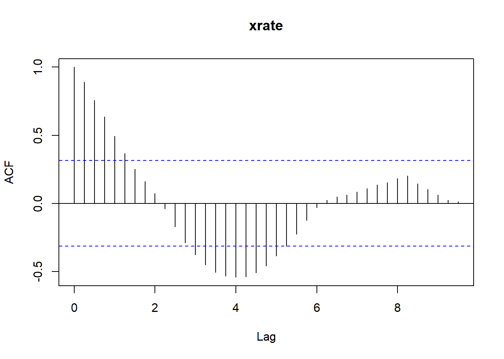
y.ts.ma<-arima(y.ts, order =c(0,0,1))stargazer(y.ts.ma,type ="text")
Nuevamente no se cumple la condición de estacionariedad, pues el \(\theta_1>1\)
El punto de análisis ahora es determinar matemáticamente cuál es el modelo que mejor se ajusta a los datos. Para ellos se introduce un concepto adicional conocido como autocorrelación parcial (PAC).
La PAC mide la correlación existente entre \(y_t\) e \(y_{t-k}\) después de se ha removido la influencia de las variables intermedias \(y_{t-1}, y_{t-2},...,y_{t-k-1}\). La autocorrelación parcial se define como la siguiente correlación condicional:
Donde \(y_t\) tiene media cero. Se puede demostrar que la autocorrelación parcial puede ser obtenida por medio de una simple regresión lineal tal como se muestra a continuación:
\[y_t=\phi_{k1}y_{t-1}+\phi_{k2}y_{t-2}+...+\phi_{kk}y_{t-k}+\epsilon_t [84]\] Donde \(\hat{\rho}_{kk}=\hat{\phi}_{kk}\), notar que la regresión no tiene constante y que los datos representan diferencias con respecto a la media muestral (centrados). Asimismo, se puede demostrar matemáticamente que:
\[\rho_{11}=\rho_1 [85]\]\[\rho_{12}=\frac{\rho_2-\rho_1}{\rho_2} [86]\] Finalmente, si el proceso aleatorio {\(y_t\)} es ruido blanco distribuido asintóticamente como una normal, tal que:
\[\sqrt{n}\times\hat{\rho}_{jk}\rightarrow N(0, I_k) [87]\] Donde \(\hat{\rho}_{jk}=(\hat\rho_{11},\hat\rho_{12},...,\hat\rho_{1k})\) De acuerdo a [87], se pueden construir intervalos de confianza para la autocorrelación parcial poblacional. Estos intervalos de confianza estarán daddos por:
\[\rho_{jk}\in[\hat{\rho}_{jk}\pm z_{\alpha/2}\times\frac{1}{\sqrt{n}}] [88]\] Este método permite ver la existencia de autocorrelación parcial de un orden específico y sirven para verificar si las autocorrelaciones parciales son en realidad un ruido blanco. Si esto último ocurre, lo que se espera es que cada autocorrelación parcial caiga dentro de las bandas señaladas en la ecuación
pacf(y.ts)
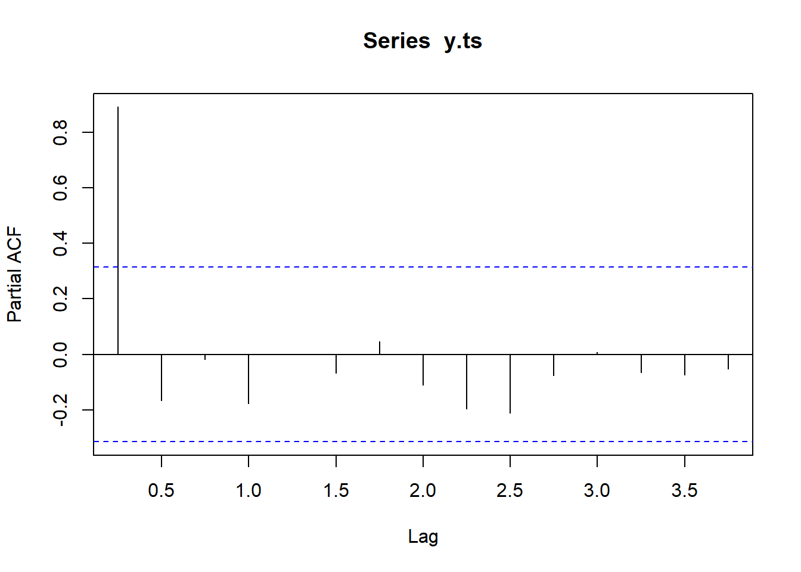
¡¡Concepto clave!!
Las autocorrelaciones parciales juegan un rol bastante importante en ayudar a determinar el número de rezagos (p) de un proceso AR.
Para entender esto se plantea el siguiente modelo AR(3):
Como se puede apreciar, desde el punto de vista de las autocorrelaciones parciales lo que se está afirmando al considerar \(p= 3\) es que la influencia de \(y_{t-3}\) en \(y_t\) (después de haber controlado la influencia de \(y_{t-1}\) e \(y_{t-2}\)) es significativa, es decir, que la influencia de rezagos superiores a 3 es nula. Esto implica que las autocorrelaciones parciales de un proceso AR(p) serán significativas solo hasta \(p\) y de ahí serán iguales a cero
Ahora, se analizará qué es lo que pasa en el caso de los modelos MA(q). Se recuerda que estos modelos pueden ser expresados como modelos \(AR(\infty)\) si y solo si son invertibles. En otras palabaras, si un modelo MA(q) se puede escribir como \(AR(\infty)\), las autocorrelaciones parciales decaerán asintóticamente ya que en un modelo \(AR(\infty)\), existirán \(\infty\) autocorrelaciones parciales que ejercen influencia significativa sobre la variable \(y_t\)
Finalmente, lo que pasará en un proceso ARMA(p,q) será que las autocorrelaciones parciales decaerán asintóticamente, al igual que en el proceso MA(q) invertible. La lógica de esto es bastante fácil de entender. Se recuerda que el modelo ARMA(p,q), como el presentado en la ecuación (80), es simplemente un proceso mixto donde al momento de calcular las autocorrelaciones parciales el modelo dominante será la parte MA(q), que es la que hace que las autocorrelaciones parciales decaigan asintóticamente.
Ahora se tienen todos los elementos necesarios para, gráficamente, poder determinar con cierto grado de certeza el modelo adecuado que se ajuste a los datos que se desean analizar. *Teóricamente**, una serie de tiempo estacionaria {\(y_t\)} sigue un proceso:
MA(q), si sus autocorrelaciones son iguales a cero después de q rezagos y sus autocorrelaciones parciales decaen asintóticamente.
AR(p) si sus autocorrelaciones decaen asintóticamente y sus autocorrelaciones parciales son ceros después de p rezagos
ARMA(p,q) si sus autocorrelaciones decaen asintóticamente al igual que sus autocorrelaciones parciales
plot.ts(y.ts)
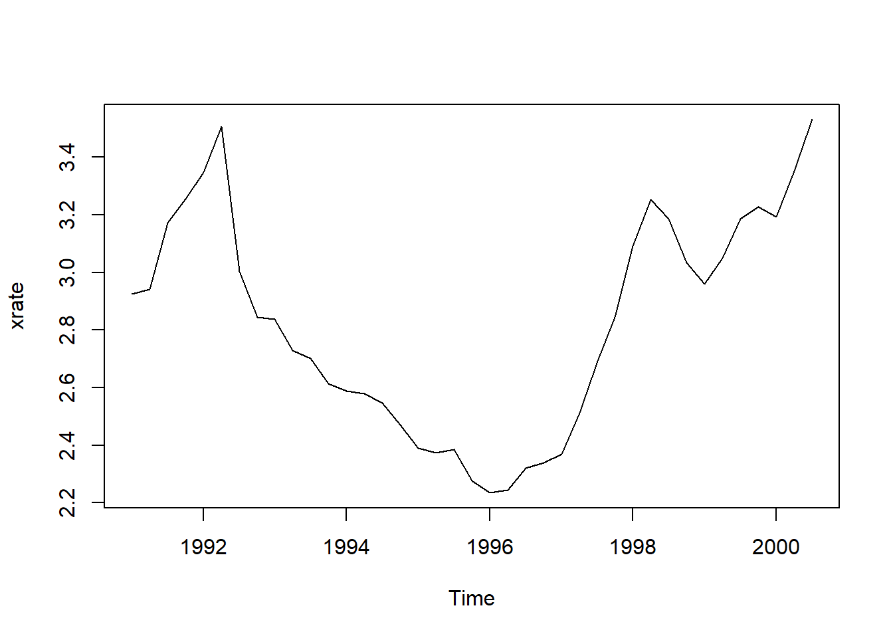
plot.ts(diff(y.ts))
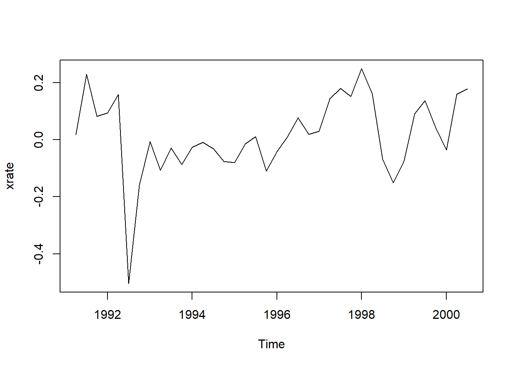
layout(1,2,1)acf(diff(y.ts))
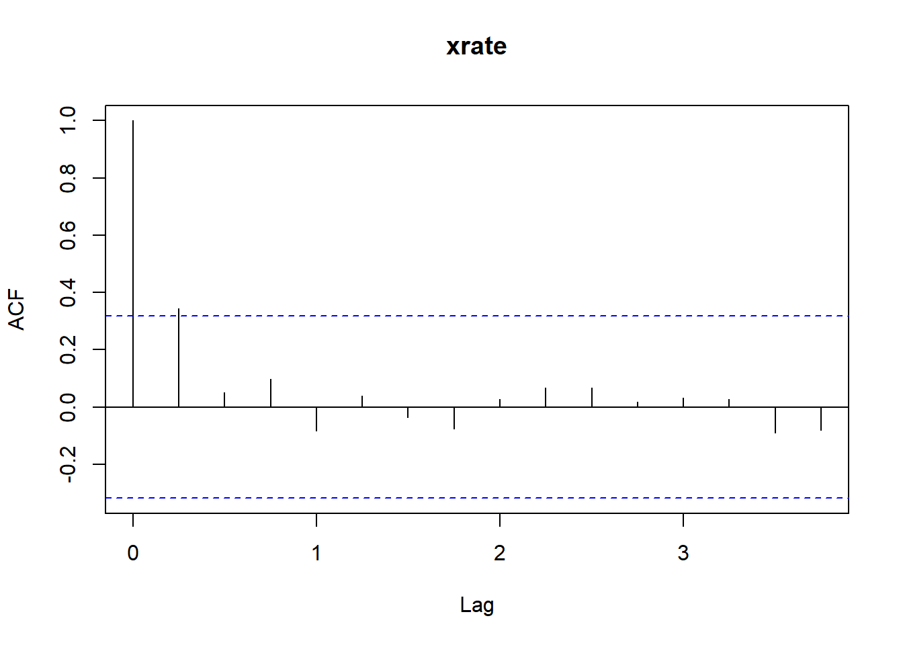
pacf(diff(y.ts), lag.max =500)
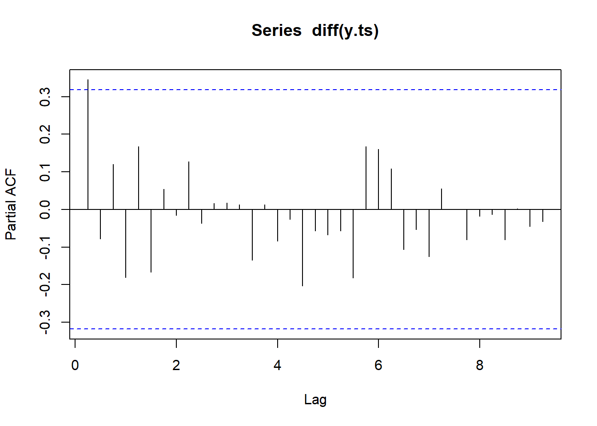
str(y.ts)
Time-Series [1:39, 1] from 1991 to 2000: 2.92 2.94 3.17 3.25 3.35 ...
- attr(*, "dimnames")=List of 2
..$ : NULL
..$ : chr "xrate"
ma1<-arima(y.ts, order =c(0,0,1))stargazer(ma1, type ="text")
Simulador datos para un modelo ARMA(2,2) y, verificar si se cumplen o no las condiciones para determinar estos modelos.
8 Criterios de información
Para determinar el modelo de series de tiempo apropiado, se utilizan tres criterios de información. La idea general de cada uno de estos criterios es que si se aumenta el número de rezagos esto generará dos cosas: primera, el ajuste del modelo mejorará porque la desviación estándar de los errores disminuirá; segundo, el modelo será más complejo de estimar, es decir, que se estará sacrificando la parsimonia del modelo a expensas de un mejor ajuste.
En modelos de series de tiempo la idea de parsimonia se refiere a que siempre se preferirá un modelo con un menor número de rezagos si la influencia marginal de incluir rezagos adicionales en el modelo es baja. Esto se puede entender fácilmente recordando que el número de grados de libertad en los modelos está dado por \(n-k\), donde \(n\) es el número de observaciones y \(k\) el número de parámetros (que incluye al intercepto y a los rezagos, ya sea de la variable endógena \(yt\) como de los errores). Por lo tanto, si se incluyen más rezagos, \(k\) se incrementará el número de párametros a ser estimados y los grados de libertad se reducirán, lo que a su vez afectará la inferencia estadística que se desea realizar. Esto es particularmente es cierto cuando el tamaño de la muestra es pequeño.
8.1 Ejemplo:
En un modelo ARMA(1,1), tengo tres parámetros a estimar (\(k\)), si \(n=30\),entoces los grados de libertad serán \(n-k=30-3=27\) ver (EJ1), ¿Qué pasa si el modelo es un ARMA(2,2)?
\[y_t=\mu+\phi_1y_{t-1}+\phi_2y_{t-2}+u_t+\theta_1u_{t-1}+\theta_2u_{t-2} [EJ2]\] En un modelo ARMA(2,2)\(k=5\) si \(n=30\), entoces \(n-k=30-5=25\)
qt(0.975, df =12)
[1] 2.178813
qt(0.975, df =10)
[1] 2.228139
Presentamos tres métodos que permiten determinar el número adecuado de rezagos, los cuales son:
Akaike information criteria (AIC)- Criterio de Información de Akaike
\[AIC=ln(e´\times e)-\frac{2k}{n} [90]\] * Bayesian information criteria (BIC) o Shwarz Information Criteria- Criterio de Información Bayesiano
\[BIC=ln(e´\times e)-\frac{ln(k)}{n} [91]\] * Hannan-Quinn information criteria (HQIC)- Criterio de Información de Hannan-Quinn
\[HQIC=ln(e´\times e)-\frac{2\times ln[ln(k)]}{n} [92]\] Donde \(e´\times e\) es el estimador de la varianza de los errores de la regresión, en todos los casos.
La idea es seleccionar el número de rezagos que haga que se minimice el criterio de información escogido. En la práctica, los métodos más usados son el AIC y el BIC. Sin embargo, ambos métodos no son perfectos y será necesaria cierta discrecionalidad al momento de escoger el mejor modelo. El AIC es eficiente pero sesgado, mientras que el BIC es insesgado pero ineficiente. Es por esto que se usa cierta lógica que puede estar dada por algún modelo teórico o por la frecuencia de los datos con la que se está trabajando. Por ejemplo, si se trabaja con datos diarios de la bolsa de valores, lo común es que el número de rezagos máximos sean iguales a 5 (una semana laboral). Si se trabajan con datos mensuales, por lo general se asume que 12 es el número máximo de rezagos (un año)
9
www<-"https://raw.githubusercontent.com/prabeshdhakal/Introductory-Time-Series-with-R-Datasets/master/cbe.dat"CBE <-read.table(www, header = T)Elec.ts<-ts(CBE[,3], start =1958, frequency =12)plot.ts(Elec.ts)
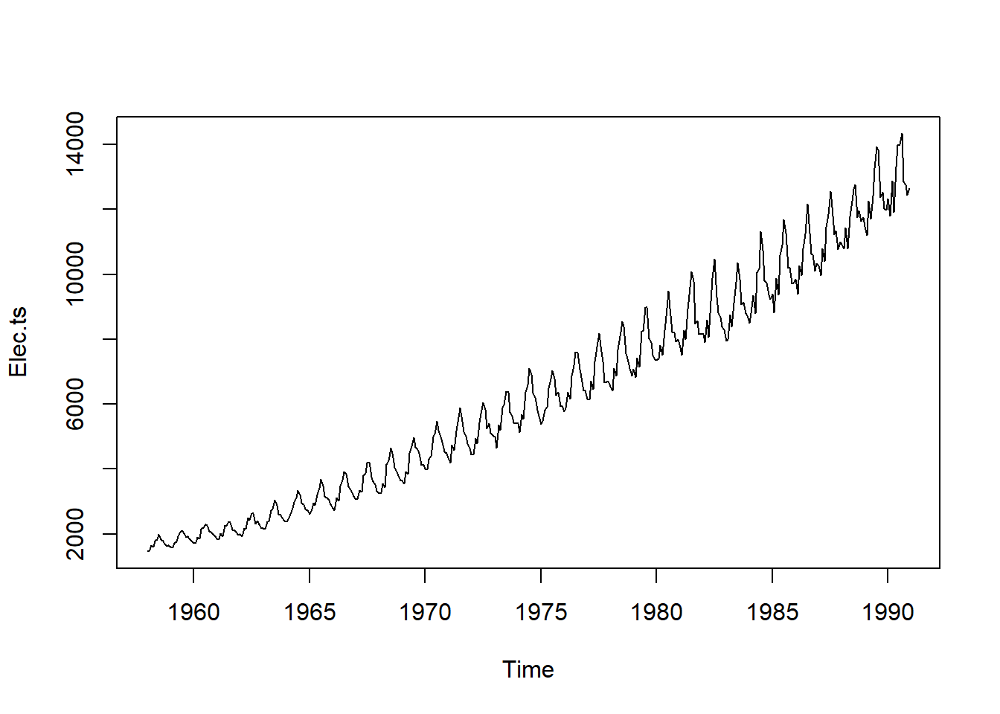
Time <-1:length(Elec.ts)Imth<-cycle(Elec.ts)Elec.lm <-lm(log(Elec.ts)~Time+I(Time^2)+factor(Imth))summary(Elec.lm)
Lo que se tiene que advertir aquí es que la influencia de la parte de las medias móviles solo se da hasta el orden del proceso (q). A partir de ahí el pronóstico dependerá íntegramente en los pronósticos generados por el modelo AR.
10 Pronosticos
11 Evaluación de los pronósticos
Para determinar si un pronóstico es adecuado, se usan los estadísticos que se presentan a continuación. La idea general de todos estos estadísticos es que comparan los valores reales con aquellos que han sido pronosticados. Ahora bien, como los errores pueden ser positivos o negativos, la simple suma de ellos no sería de gran ayuda puesto que se cancelarían entre ellos. Es por eso que los índices trabajan ya sea con los errores al cuadrado o con el valor absoluto de los errores.
Normalmente se utilizan estos estadísticos como elementos de comparación con los pronósticos de otros modelos. Se asume que el mejor modelo es aquel que tiene los estadísticos con los menores valores.
Si se está en el periodo \(t\) y se desea hacer pronósticos \(r\) periodos adelante, se emplea alguno de los indicadores que se analizan a continuación:
11.1 La media de los errores al cuadrado (Mean Square Error-MSE)
\[MSE=\frac{\Sigma_{j=t+i}^{t+r}(y_j-g_{t,j})^2}{r} [93]\] Donde \(y_j\) es el valor observado de los datos y, \(g_{t,j}\) es el valor del pronóstico. Por lo general se usa la ráiz del MSE a la que se denomina como la raíz de la media de los errores al cuadradro (RMSE)
11.3 La media absoluta de errores porcentuales (Mean Absolute Percentage Error-MAPE)
El MAPE representa el cambio porcentual de los errores, por lo que su valor se encontrará siempre entre [0,1]. Tomará el valor de 1 cuando el pronóstico provenga de un modelo de camino aleatorio (\(p_t=p_{t-1}+\epsilon_t\)), es decir, cuando el pronóstico el pronóstico \(g_{t,j}\) sea igual a cero. Por lo tanto, si el \(MAPE<1\), esto indicará que los pronósticos realizados son mejores que los efectuados con el modelo de camino aleatorio.
\[MAPE=\frac{\Sigma_{j=t+1}^{t+r}|\frac{y_j-g_{t,j}}{g_{t,j}}|}{r}\times 100[96]\] ## El coeficiente de desigualdad de Theil (Theil Inequality Coefficient)
Este coeficiente mide las ganancias (en términos de pronósticos) de un modelo cualquiera con respecto a un modelo base, que usualmente es el modelo de caminos aleatorios. Si este coeficiente toma un valor menor (mayor) que 1, significará que el modelo que se está usando es mejor (peor) que el modelo base.
\[Theil=\sqrt{\Sigma_{j=t+1}^{t+r}\frac{(\frac{y_j-g_{t,j}}{y_j})^2}{(\frac{y_j-g_{t,j}^b}{y_j})^2}} [97]\] ## Descomposición de los errores de predicción
El MSE puede ser descompuesto de la siguiente manera:
\[MSE=\frac{\Sigma_{j=t+1}^{t+r}(y_j-g_{t,j})^2}{r}=(\frac{\Sigma_{j=t+1}^{t+r}g_{t,j}^2}{r}-\bar{y})^2+(s_y-s_g)^2+(2)\times(1-\rho)\times(s_gs_y) [98]\] Donde \(\bar{y}\) es la media de las observaciones en el periodo pronosticado, \(s_y\) y \(s_g\) son desviaciones estándar de las observaciones y de los pronósticos, respectivamente y, \(\rho\) representa el coeficiente de correlación entre las observaciones y sus pronósticos
El primer elemento de la mano derecha de la ecuación es conocido como el componente de insesgamiento, el segundo como el componente de la varianza y el último término como el componente de correlación. Como siempre, se espera que los pronósticos sean insesgados y eficientes, y para un buen pronóstico es que sus componentes de insesgamiento y varianza sean pequeños comparados con el último componente de correlación.
12 Metodología de Box-Jenkings
Esta metodología fue desarrollada por Box & Jenkins. La metodología sigue los siguientes pasos:
Determinar el modelo y el orden de los mismos que mejor se ajusta a los datos. Para ello se utilizan los métodos gráficos y los criterios de información presentados anteriormente.
Estimar el modelo seleccionado, es decir, estimar los coeficientes del modelo seleccionado en el paso anterior.
Verificar si el modelo seleccionado en el paso anterior es adecuado. Para esto existen dos métodos:
+ el primero consiste en crear un modelo con más rezagos que los
identificados en el paso previo y verificar que los rezagos extra no
son estadísticamente significativos.
+ El segundo método consiste en analizar los residuos del modelo
seleccionado. Si el modelo seleccionado captura adecuadamente la
dinámica de la variable, los errores deberían ser ruidos blancos, es
decir deberían ser no autocorrelacionados. Esto se puede probar mediante
la prueba de Ljung-Box.
Realizar inferencias y pronósticos con el modelo estimado.